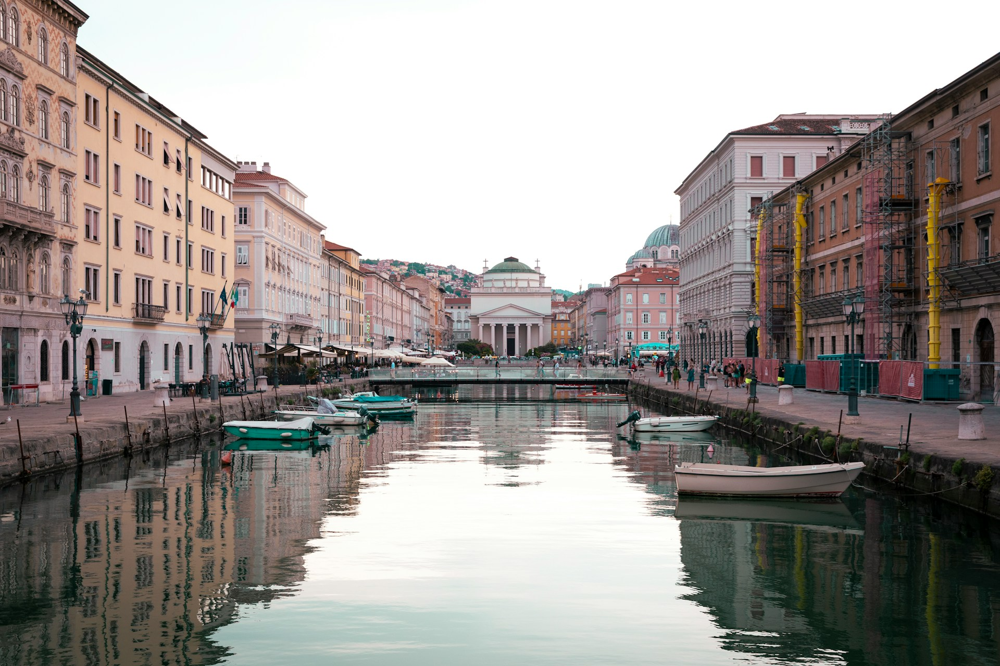

Benvenuti a Trieste
Clicca il pulsante per leggere una curiosità!
Trieste è il capoluogo del Friuli Venezia Giulia e si affaccia sul mare Adriatico. Per molto tempo è stata il porto principale dell'Impero asburgico ed è diventata italiana dopo la Prima guerra mondiale.
Il cuore della città è piazza Unità d'Italia, una delle più grandi piazze d'Europa affacciate sul mare. Poco lontano c'è il Canal Grande, scavato nel Settecento per far arrivare le navi fino in città.


Sito web sviluppato da Omar Vidonis, studente dell'università degli studi di Trieste matricola: IN0501505